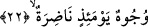
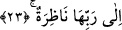

21. Âhireti bırakıyorsunuz.
Onun için çalışmıyor; hattâ onu inkâr ediyorsunuz. et-Tevilâtü’n-necmiyye’de bu son
kısım şöyle anlaşılmıştır: “Siz peşin olanı seviyorsunuz” yâni siz dünya nimetini
seviyorsunuz, “âhireti bırakıyorsunuz” yâni âhiretin gizli nimetini bırakıyorsunuz. Bu
her iki âyetteki hitâb Peygamber (s.a.) Efendimiz’in ümmetinedir.
22. Yüzler vardır ki, o gün ışıl ışıl parıldayacaktır.
Âyette yer alan ve “ışıl ışıl parıldayacaktır” şeklinde tercüme edilen “nâdıra”
kelimesinin kökü olan “en-nadratü” insan derisinin tâzelik ve güzelliği anlamınadır.
Parıl parıl parıldayacak olan yüzlerdeki bu pırıltı nimete ermenin bir eseri ve izi
olacaktır. “Nadır” kelimesi her türlü nesne arasında yumuşak ve taze olan demektir.
Buna göre âyet-i kerîmenin mânâsı şudur: O gün öyle yüzler vardır ki muhlis, samîmî
müminlerin yüzleridir. O yüzler kıyâmet koptuğu gün, parlak ve ışıl ışıl olacaktır.
Onların üzerinde nimetin vermiş olduğu parlaklık, tazelik görülecek, müşâhede
olunacaktır. Nitekim Allah bu gerçeği bir başka âyet-i kerîmede şöyle dile getirir:
“Onların yüzünde nimetlerin sevincini görürsün” (el-Mutaffifin, 83/24)
23. Rablerine bakacaklardır (O’nu göreceklerdir).
“Rablerine bakacaklardır.” Bakmak anlamına gelen “nazar” gözün (basar) ve
basîretin herhangi bir şeyi kavramak ve görmek için ona çevrilmesi demektir. “Yüzlerin
bakması” tâbirinden maksad ise yüzlerde bulunan gözlerin bakması demektir. Bu ifâde
mahallin zikredilmesi ve hâllin/orada bulunanın, kasdedilmesi kabilinden mecaz-ı
mürsel olur. Bu yapılan açıklama ehl-i kâlin açıklamasıdır. Buna karşılık bir de ehl-i
hâl’in açıklaması vardır. Onlara göre bakmak sâdece göze mahsus değildir. Eğer böyle
denecek olursa gözlerin Allah’a bakmasını açıklamak da zor olur. Çünkü Allah bundan
münezzehtir. Şu hâlde yüz ve gözlerin bakması şeklinde değil de, şöyle anlamak
uygundur: O zaman bâtın zâhire dönüşecektir, zâhir olan da bütün cüzleriyle basara
dönüşecek ve böylece hak basar ile müşâhede olunacaktır. Tıpkı dünyada basîretle
müşâhede olunduğu gibi. Âhiret ise letâfet âlemidir. Bu nedenle âhirette kalıbın ve zâhir
cesedin hiçbir hükmü yoktur. Asıl hüküm kalb ve âzâlar biçiminde zuhûr eden rûhadır.
Ârif bir zâta sordular ki: “Allah yoluna hangi taraftan gidilir?” Dedi ki: “Senin
tarafından değil, kendinden geçtiğinde bütün cihetler artık yol olur.” Sıddıklarla
yürüyenler ve onların yolunu izleyenler için bu yolda kalbe gitmekten başka atılacak